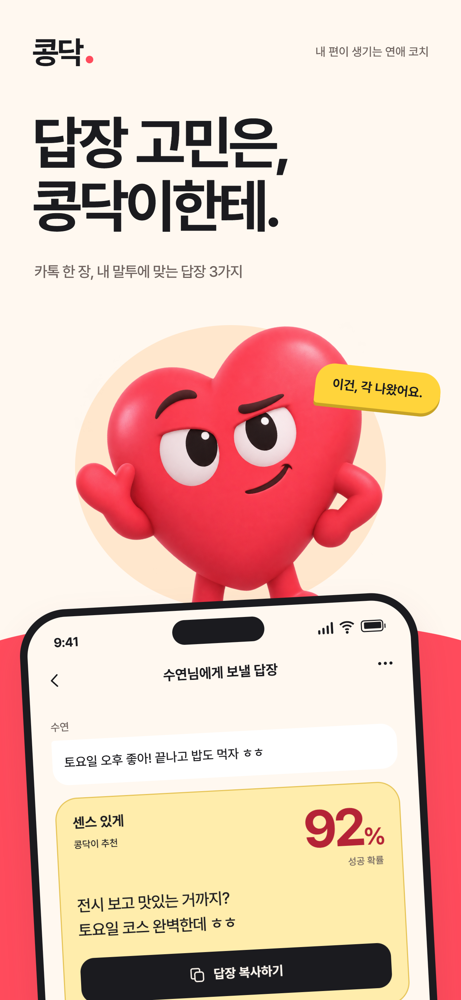
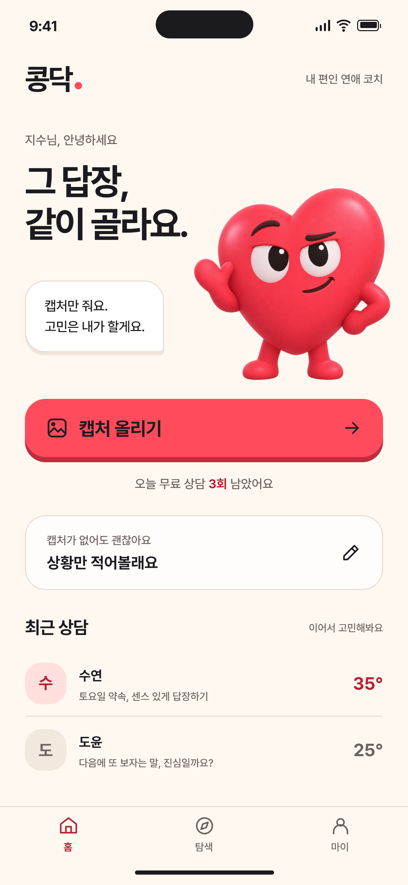
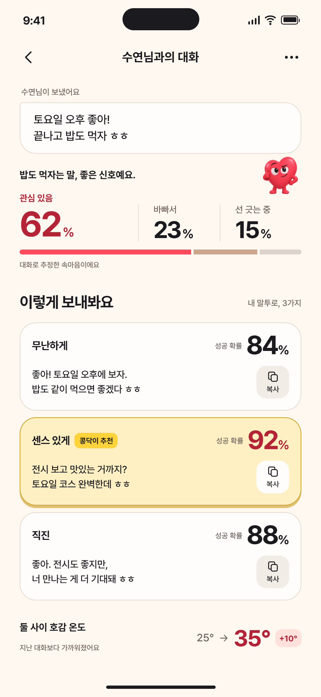
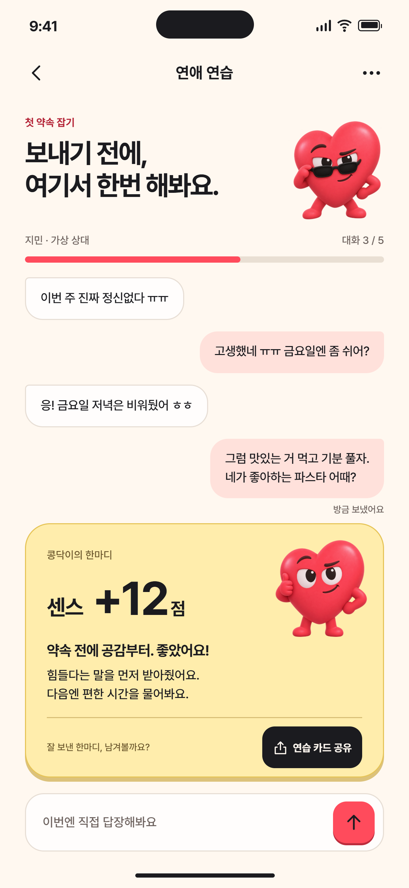

고민할 땐 든든하게. 잘 보냈을 땐 신나게.
콩닥이와 시작하고, 고르고, 연습하는 연애 코칭
브랜드·화면 시안 0301첫인상

한 번 보면 기억나는 내 편
02홈

캡처 한 장으로 가볍게 시작
03답장 코칭

내 말투에 맞는 세 가지 선택
04연애 연습

공감 한마디에, 센스 +12점
콩닥이와 시작하고, 고르고, 연습하는 연애 코칭
브랜드·화면 시안 03
한 번 보면 기억나는 내 편

캡처 한 장으로 가볍게 시작

내 말투에 맞는 세 가지 선택

공감 한마디에, 센스 +12점